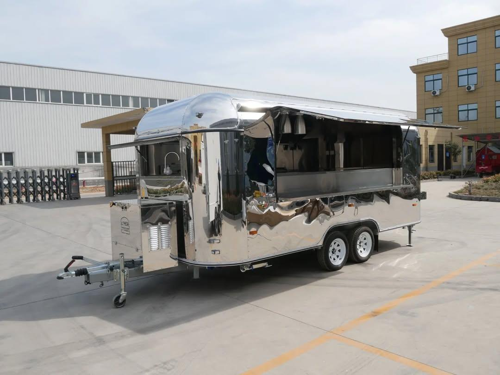

Nous apportons les saveurs de Savoie directement à vous avec notre food truck. Profitez de nos plats traditionnels montagnards, partout où nous nous arrêtons !
At Nomad Chalet, we bring the heart of the Alps to your plate, wherever you are ! Born from love of Savoyard cuisine and a desire to make it accessible far beyond the mountains, our foodtruck delivers the authentic flavors pf the Franch Alpsstraight to your hands. Our goal is to share the cozy taste of Alpine food. From melty raclette sandwiches to tasty tartiflette bowls, every bite is made with care, love and the best local ingrdients.
We combine the cozy dream of a mountain chalet with the freedom to roam. By bringing the Alps to you wherever we go, we are creating a unique experience with great food, activities, and tradition, all in one! Join us on this delicious journey. Come, taste the Alps, and let Nomad Chalet’s food transport you to the mountains with every bite!
It all started with a trip to the French Alps. On a cold evening near Annecy, I tasted raclette for the first time. It was a moment of pure joy. But back in Normandy, I wondered, "Why can’t we enjoy this incredible Savoyard food everywhere?" So Nomad Chalet was born! Since Easter 2018, we have brought the flavors of the Alps to Normandy and beyond, sharing a taste of tradition wherever we go.
Nomad Chalet travels around the mountains in the Savoie region, with occasional stops in Raven, Annecy, and parts of Albertville. Check out our schedule on Instagram to see where we’ll be each week. We’re never far from your favorite spot!
Click me to see our scheduleWe believe that food should not only taste incredibly good but also respect the planet and animals. We only use Alpine-sourced and sustainable ingredients from respectful farms. Our food truck is fully electric, helping us reduce waste and support sustainability. We also use eco-friendly packaging to minimize our carbon footprint while maintaining high-quality standards.